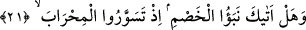
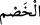
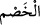
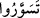
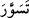

birinin incisini çalmış ve inciyi asasının içine atmış. Şikayetçi durumu Dâvûd’un (a.s.)
muhakemesine arzedip:
- ‘Bu benim incimi aldı ve ben doğru söylüyorum!’ deyince, gelmiş ve zinciri
tutabilmiş. Hakkında şikâyette bulunulan adam gelip ‘al şu asayı!’ demiş, adam da
alınca,
- ‘Ben inciyi buna verdim, ben doğru söylüyorum!’ demiş ve o da zinciri tutabilmiş.
Dâvûd hayretler içinde kalmış ve bu olaydan sonra zincir (göğe) kaldırılarak Dâvûd’a,
artık delil ve yeminlere dayalı olarak hüküm vermesi emredilmiş.
İmam Ebü’l-Leys Semerkandî Tefsiri’nde der ki: “Ona hikmet verdik” ifâdesi,
“bilgi ve anlayış verdik” anlamında; ‘fasle’l-hitâb verdik’ ifâdesi de “şikâyetçiler ile
hakkında şikâyet bulunanlar arasında delil ve yeminle hükmetmek” anlamındadır.
Bizim şerîatimizde de böyle hüküm verilir. Çünkü herhangi bir problem hakkında
cevap isteyenler için en düzgün yol ve en güzel araç budur.
21. (Ey Muhammed!), Sana dâvâcıların haberi ulaştı mı? Hani Mihraba (mâbedin
duvarına) tırmanıp,
“(Ey Muhammed!), Sana davâcıların haberi ulaştı mı?” Bu cümle, hem hayret hem
de sonrasında anlatılacak olayı dinlemeğe teşvik anlamı ifâde eden bir istifhamdır.
Böylece, bu olayın hiç kimse için gizli olmaması gereken güzel bir olay olduğuna dikkat
çekilmiştir.
(__WORD__), büyük haber; (__WORD__) da dâvacı/muhâsım anlamındadır. “Muhâsama” kelimesi,
mahkemeleşen taraflardan herbirinin ötekinin husmuna, yâni yakasına yapışmasından
gelir. (__WORD__) kelimesi esasen, tekili de çoğulu da aynı olan bir masdar olduğu içindir ki
“tırmanmışlardı” anlamına gelen (__WORD__) kelimesinde hasm’a raci zamir çoğul
yapılmıştır.
“Hani mihraba (mâbedin duvarına) tırmanıp,” (__WORD__) fiili, biri, bir yerin sur kısmına
tırmandığında kullanılır. Şehrin suru demek, şehri kuşatan duvarı demektir. Kelimenin
yüksek duvarlar için kullanıldığı da olur ki, buradaki anlamı da budur. Âyetteki
“mihrab”dan maksad ise Dâvûd’un Rabbine tâatle meşgul olmak için girdiği evdir. Bu
evin bir odadan ibâret olduğu da söylenir. Bu odanın bir mihrabı olduğu içindir ki, ‘bir
şeyi en değerli parçasıyla adlandırmak’ kabilinden bir mecazla odaya “mihrab”
denmiştir.
“Hani” anlamındaki (__WORD__) lafzı, ibârede bulunmayan bir kelimeye, mahkemeleşme (__WORD__) kelimesine müteallık olup mânâsı şöyledir: “Hani mihraba tırmanıp” yâni
odanın duvarına çıkıp Dâvûd’un yanına gelerek mahkemeleşmişlerdi ya…